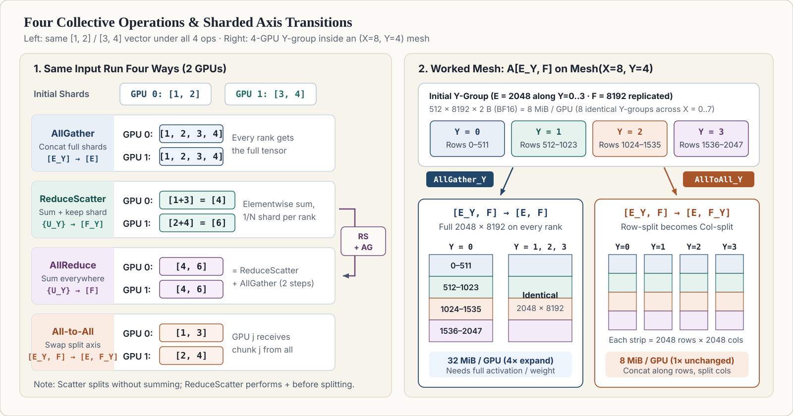
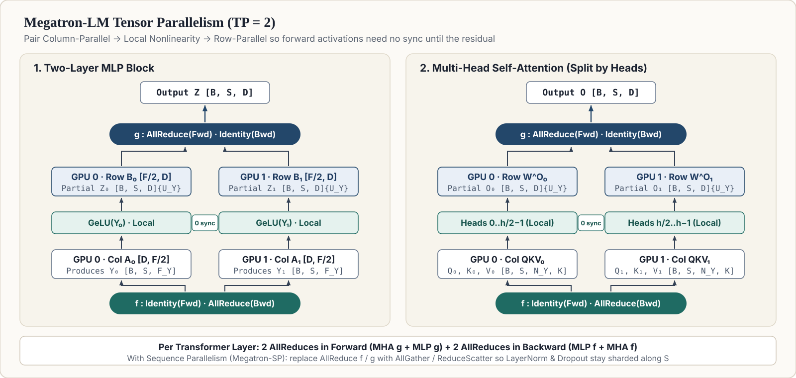

初学大模型分布式训练，最容易迷失在各种缩写里——DDP、ZeRO、FSDP、TP、PP、EP。其实剥开框架外壳之后，几乎所有并行策略都在反复回答同一对问题：把张量或批次的哪一维切开放到多张卡上，以及在下一步计算到来之前，用哪一种集合通信把缺的那块拼出来或累加掉。
本文把 Google JAX Scaling Book 的命名分片推演，和 PyTorch DDP、DeepSpeed ZeRO、Megatron-LM、GPipe、DeepSpeed-MoE 的系统源码主线揉在一起。我们不孤立背概念，而是直接从 4 个基础集合通信原语（AllGather、ReduceScatter、AllReduce、All-to-All）与点对点 send/recv 出发，顺着显存与通信带宽的物理约束，把整套 4D 混合并行体系从头推导一遍。
单卡为何训不动：显存账与网格分片记法
16Φ 混合精度显存构成
一个拥有 Φ 个参数的大模型，在训练时占用的远不只是 2Φ 字节。工业界标准的混合精度 + Adam 训练流程（AMP、Megatron-LM、DeepSpeed 均采用此范式）会让前向与反向计算走 BF16 或 FP16 吃满 Tensor Core 算力，而优化器更新保留 FP32 高精度副本，防止微小梯度在半精度舍入下直接消失。
| 显存组成 | 数值精度 | 每参数字节数 | 7B 模型 | 70B 模型 |
|---|---|---|---|---|
| 前向 / 反向计算权重 | BF16 / FP16 | 2Φ |
14 GB | 140 GB |
| 梯度（Gradients） | BF16 / FP16（或 FP32） | 2Φ（或 4Φ） |
14 GB | 140 GB |
| FP32 主权重副本（Master Weights） | FP32 | 4Φ |
28 GB | 280 GB |
Adam 一阶动量 m |
FP32 | 4Φ |
28 GB | 280 GB |
Adam 二阶动量 v |
FP32 | 4Φ |
28 GB | 280 GB |
| 静态模型状态总计 | 混合精度 | 16Φ（FP32 梯度则 18Φ） |
112 GB | 1.12 TB |
这里藏着 Megatron-LM 分布式混合精度源码解读里两个很实在的工程细节。第一，即便不算激活值（Activations）和 CUDA 上下文，7B 模型光静态模型状态就需要 112 GB，已经塞不进一张 80 GB H100。第二，为了避免半精度梯度下溢，FP16 训练需要配合动态损失缩放（Loss Scaling：先放大 Loss 2k 倍，反向后缩回再做梯度裁剪，若检测到 inf/NaN 就跳过本步并减半缩放因子）；同时 Megatron 还会专门开一块连续平坦的 FP32（或 BF16）大梯度 Buffer，让底层 NCCL 对整块连续内存发起一次通信，而不是为几百个零散张量频繁启动 kernel。
命名轴分片记法与一道易错尺寸题
多机多卡一复杂，光靠“按列切分给某些卡”很快就会算乱。JAX Scaling Book 把物理设备网格（Device Mesh）先起好名字——例如把 32 张 GPU 排成二维网格 Mesh(X=8, Y=4)——然后直接把分片规则写进张量形状下标里：
A[EY, F]表示张量逻辑形状是[E, F]：第 1 维E沿着网格的Y轴切分，第 2 维F不切；而网格轴X根本没出现在下标里，说明沿X轴是完全复制（Replica）的。C[B, F]{UY}表示一个沿Y轴尚未归约（Unreduced）的部分和（Partial Sum）：Y组里的每张卡各拿着相同形状[B, F]的一块中间矩阵，整组对应位置加起来才是真正的C。
用一道几乎所有人第一次做都会踩坑的计算题来检验理解：设设备网格为 Mesh(X=8, Y=4) 共 32 张卡，BF16 矩阵写作 A[EY, F]，其中 E = 2048、F = 8192。为什么每张卡持有的是 512 × 8192 × 2 B = 8 MiB，而不是把 2048 均分给 32 张卡得到的 64 × 8192 × 2 B = 1 MiB？
关键就在于下标只写了 EY。Y 轴只有 4 张卡，所以 E = 2048 只切给 4 张卡，每张卡分到 2048 / 4 = 512 行；而在 X 轴上共有 8 组，这 8 组里放着完全相同的 4 份分片副本：
组别（X 轴） |
Y = 0 |
Y = 1 |
Y = 2 |
Y = 3 |
|---|---|---|---|---|
X = 0 |
第 0–511 行 | 第 512–1023 行 | 第 1024–1535 行 | 第 1536–2047 行 |
X = 1 |
第 0–511 行 | 第 512–1023 行 | 第 1024–1535 行 | 第 1536–2047 行 |
其余 6 组（X = 2..7） |
同样的 0–511 行 | 同样的 512–1023 行 | 同样的 1024–1535 行 | 同样的 1536–2047 行 |
因此每张卡初始持有 512 × 8192 × 2 B = 8 MiB，在各自 4 卡的 Y 组内做一次 AllGatherY 后，每张卡都会拼出完整的 [2048, 8192]（32 MiB）。反过来用 64 行反推一眼就能验出破绽：如果真每张卡只有 64 行，那么只在 4 卡组内做 AllGatherY 最多拼出 64 × 4 = 256 行，剩下的 7/8 还在 X 轴那 7 组卡上，无法凑出完整的 2048 行。这正是记法下标 EY 的严谨之处。
四大集合通信与分片矩阵乘法
AllGather、ReduceScatter、AllReduce 与 All-to-All
在设备网格的某个通信组（比如固定 X、沿着 Y 轴的 4 张卡）内部变换张量分布或合并部分和，核心就是 4 个集合通信（Collectives）。区分它们不用死记硬背，只需要盯住两件事：数据要不要按位置做求和（Reduce）？做完之后每张卡手里留下什么？
| 操作 | 怎么做 | 每张卡最后拿到什么 | 大模型训练里的典型位置 |
|---|---|---|---|
AllGather |
收集组内各卡的分片，按卡序拼接 | 每张卡都拿到完整张量（[EY, F] → [E, F]） |
FSDP / ZeRO-3 计算前临时把该层分散的权重拼回完整矩阵 |
ReduceScatter |
把各卡相同位置元素相加，再切分返还 | 每张卡拿到求和结果的各自一片（{UY} → [FY]） |
梯度求和后，只保留本卡负责更新的那片梯度 |
AllReduce |
把各卡相同位置元素相加，并分发完整结果 | 每张卡都拿到完整的求和结果（{UY} → [F]） |
DDP 同步全量梯度，或沿内维 D 切分的矩阵乘法合并部分和 |
All-to-All |
每卡把自己数据切 N 块，第 j 块发给第 j 卡 |
每卡拼好属于自己的跨卡分块（[EY, F] → [E, FY]） |
MoE 把 token 路由到目标专家所在 GPU，或行切分改列切分 |
拿完全同一组数字在两张卡上把 4 个操作各跑一遍，语义差异一目了然——设初始输入为 GPU 0 = [1, 2]、GPU 1 = [3, 4]：
| 操作 | GPU 0 结果 | GPU 1 结果 | 核心变化 |
|---|---|---|---|
| 初始输入 | [1, 2] |
[3, 4] |
各持一半原始分片 |
AllGather |
[1, 2, 3, 4] |
[1, 2, 3, 4] |
只拼接不求和（张量尺寸翻倍） |
ReduceScatter |
[1+3] = [4] |
[2+4] = [6] |
按位置求和并分片（每卡尺寸减半） |
AllReduce |
[4, 6] |
[4, 6] |
按位置求和后全卡持有完整结果 |
All-to-All |
[1, 3] |
[2, 4] |
GPU 0 收各自第 0 块，GPU 1 收第 1 块（总尺寸不变） |
这里顺便厘清两个极易混淆的问题。第一，AllReduce = AllGather + Scatter 吗？不对，应该是先 ReduceScatter，再 AllGather。单纯的 Scatter 只负责拆分分发，不做加法；上面例子里 1+3 = [4] 和 2+4 = [6] 的归约必须先由 ReduceScatter 完成，紧接着再跑一步 AllGather 才把 [4] 和 [6] 拼成每卡一份的 [4, 6]。如果下一层本来就打算按分片更新（如 FSDP），做到 ReduceScatter 就可以停下，直接省掉一半通信量。
第二，AllGatherY 和 All-to-AllY 最后都在做拼接，究竟差在哪？回到上一节的 Y 组 4 卡例题，起初每卡持有 [512, 8192]（各自拿着不同的 512 行，但都持有完整的 8192 列）：
对 A[EY, F] 的操作 |
每张卡怎么发 | 每张卡最后拿到什么形状 | BF16 显存占用 |
|---|---|---|---|
AllGatherY |
把自己 512 行完整发给组内其他 3 张卡 | [2048, 8192]（记作 [E, F]） |
32 MiB（放大 4 倍） |
All-to-AllY |
把自己的 8192 列切成 4 段，第 j 段发给第 j 卡 |
[2048, 2048]（记作 [E, FY]） |
8 MiB（体积不变） |
拿 GPU 0 来看 All-to-AllY：它从 4 张卡各收到一块「512 行 × 前 2048 列」，沿行拼成 [2048, 2048]；GPU 1 则收集第二段 2048 列。于是，原本「每卡负责一段行」的矩阵被无冗余地转成了「每卡负责一段列」，每张卡总元素数纹丝不动。
选原语的四句口诀：永远只问一句“下一步计算还缺什么？”
- 手头只有一块分片，下一步需要完整张量 →
AllGather - 每张卡算出来的是完整形状的部分和，下一步需要完整总和 →
AllReduce - 每张卡算出来的是完整形状的部分和，下一步每张卡只需负责其中一片 →
ReduceScatter - 手里按 A 维度切分，下一步需要改成按 B 维度切分（或把 token 寄给对应专家） →
All-to-All


分布式矩阵乘法的四种典型分片方式
有了这四个原语，考虑单层线性计算 Out[B, F] = In[B, D] · W[D, F]，按矩阵相乘“自由维 / 归约维”的位置关系，所有分布式切法都可以归结为 4 种基本情形：
- 切分外维（
In[B, D] · W[D, FY] → Out[B, FY]）：前向零通信。每卡都拿着完整输入In，各算各的输出列；对应 Megatron-LM 的ColumnParallelLinear（列并行）。 - 切分收缩内维（
In[B, DY] · W[DY, F] → Out[B, F]{UY}）：内维D被拆成1/Y，每卡只算出点积的部分和{UY}。接一次AllReduceY就能拿到完整的Out[B, F]（即 Megatron-LM 的RowParallelLinear行并行）；若下一层刚好接按批或按列分片的算子，直接接ReduceScatterY即可。 - 权重沿内维被切而输入完整（
In[BX, D] · W[DX, F]）：没法直接乘，必须先对权重跑AllGatherX(W[DX, F]) → W[D, F]，乘完得到Out[BX, F]后立刻丢弃不属于本卡的权重切片——这正是 FSDP / ZeRO-3 的核心动作。 - 2D 同时切分（
In[BX, DY] · W[DY, FX]）：把批次轴和隐藏轴同时摊在二维网格上。在大规模集群里，工程师常把AllGather或ReduceScatter拆成 Ring 的逐跳传递，让网卡收发下一块分片的同时，Tensor Core 正计算上一块分片的乘加，实现通信与计算重叠（Comm-Compute Overlap）。
数据并行：从 DP、DDP 到 ZeRO / FSDP
从单进程 DP 到分桶 Ring DDP
数据并行（Data Parallelism）沿 Batch 维度 B 切分训练数据，让每张卡处理不同的微批。PyTorch 早期的 DataParallel（DP）跑在单进程多线程模型下：每次迭代都得由 GPU 0 分发样本与权重，再把多卡输出和梯度全部汇聚回 GPU 0 算损失、更新权重，主卡显存与通信很快成为单点瓶颈。
DistributedDataParallel（DDP）改成多进程架构（一卡一进程）并基于 NCCL 执行 Ring/Tree AllReduce 同步梯度。为了不让通信傻等整个反向传播结束，DDP 把参数梯度按反向计算顺序装进若干个固定大小的梯度桶（Buckets，默认 ~25 MB）：只要后层梯度一算出并填满一个桶，后台通信流立刻对这个桶发起异步 AllReduce，前层继续反向传播，把通信严严实实盖在计算下面。Ring AllReduce 每卡每步总发送/接收数据量为 2 · (N − 1) / N · Ψ ≈ 2Ψ（Ψ 为模型参数字节总量），跟卡数 N 基本无关。
ZeRO-1/2/3 与 FSDP：两卡梯度案例拆解
DDP 虽然同步了梯度，显存利用率却很浪费：N 张卡每张都要死守同一份 16Φ 静态模型状态，并且做完全重复的 Adam 参数更新。DeepSpeed 提出的 ZeRO 与 PyTorch 原生的 FSDP 直接对这些冗余状态下手：把参数、梯度、优化器状态平摊进 N 张数据并行卡，在不改变任何数学收敛轨迹的前提下把静态显存压到 1/N。
回到前面 2 张卡的例子看清楚细节：假设各自算完本地微批后，GPU 0 得到本地梯度 g0 = [1, 2]，GPU 1 得到 g1 = [3, 4]（总梯度为 [4, 6]）：
- 普通 DDP：两张卡常驻完整权重
W与优化器状态OS。反向算出g0, g1后跑一次AllReduce，于是两卡都拿到完整的[4, 6]，各自跑完全一样的整套 Adam 更新。 - ZeRO-3 / FSDP：
GPU 0常驻权重前半片W0及对应优化器状态OS0；GPU 1常驻W1与OS1。跑到某一层之前，双方先用AllGather(W)临时拼出完整权重W算前向/反向，算完立刻丢掉别人那片权重只留Wi；等反向算出g0 = [1, 2]与g1 = [3, 4]后，改用ReduceScatter(g)——GPU 0只拿求和结果的前半[4]去更新W0，GPU 1只拿后半[6]去更新W1。
| 策略阶段 | 被切分的状态 | 单卡静态显存公式（16Φ） | N = 8 时单卡显存 | 每步通信总量（对比 DDP 2Ψ） |
|---|---|---|---|---|
| DDP（基线） | 无 | 16Φ |
16.0Φ |
2Ψ（1.0×，梯度 AllReduce） |
| ZeRO-1 | 仅优化器状态（OS） | 4Φ + 12Φ/N |
5.50Φ（省 2.9×） |
2Ψ（1.0×，梯度 RS + 参数 AG） |
| ZeRO-2 | OS + 梯度（G） | 2Φ + 14Φ/N |
3.75Φ（省 4.3×） |
2Ψ（1.0×，梯度 RS + 参数 AG） |
| ZeRO-3 / FSDP | OS + G + 参数（P） | 16Φ/N |
2.00Φ（省 8.0×） |
3Ψ（1.5×：前向/反向 AG + 梯度 RS） |
为什么 ZeRO-1 和 ZeRO-2 的总通信量跟 DDP 一模一样都是 2Ψ？因为一次 AllReduce 本身就等于 ReduceScatter(1Ψ) + AllGather(1Ψ)；ZeRO-1/2 只不过把后半段本来要 AllGather 完整梯度的操作，延后成各卡用 1/N 的 Adam 状态更新好自己的权重切片后，再做一次 AllGather 把最新权重广播给所有人。真正增加通信的是 ZeRO-3 / FSDP——由于反向计算也要临时取用完整权重，它多出了一趟前向 AllGather(1Ψ)，把总通信推高到 3Ψ（工程上靠提前一行 Pre-fetch 异步拉取下一层权重来掩盖延迟）。

张量并行：Megatron-LM 与自动微分桥接
列切配行切：MLP 与多头注意力的零中间同步设计
ZeRO-3 消灭了模型状态的跨卡重复，却切不动单层前向传播产生的庞大激活值（Activations），也无法绕开超大规模训练里单批样本上限的限制。张量并行（TP）直接把单层矩阵乘法的参数矩阵砍半。如果每一层乘完都同步一次，通信次数会多到无法承受；Megatron-LM 最漂亮的设计，就是把列并行（Column-Parallel）与行并行（Row-Parallel）首尾配对，让非线性和注意力头完全留在卡内局部执行。
1. MLP 模块（GeLU(X · A) · B）：把升维矩阵 A [D, F] 按列劈开（A = [A0, A1]），把降维矩阵 B [F, D] 按行劈开（B = [B0; B1]）。前向经过 Ai 后每卡分别算出输出激活的左半或右半 Yi；因为 GeLU 是逐元素激活函数，GeLU([X A0, X A1]) 严格等于分卡独自计算 GeLU(X Ai)，中间完全不需要任何通信！紧接着各卡乘以自己的行切矩阵 Bi，得到完整形状但尚未累加的部分和 Zi = Yi · Bi（{UTP}），最后做一次 AllReduce 就还原出完整输出。
2. 多头自注意力（MHA）：注意力天然由多个独立 Attention Head 组成。按头数切分 Q, K, V 投影（列并行），每张卡独立跑完属于自己的 h / TP 个头上的 Softmax 注意力（零跨卡通信），最后把头输出喂给按行切分的输出投影矩阵 WO，再用一次 AllReduce 合拢。顺便一提，词表 Embedding 与最后一层分类头也可以同样对偶切分：VocabParallelEmbedding 负责按词表 ID 区间查表并做一次 AllReduce；而 VocabParallelCrossEntropy 甚至不收集全词表 logits，直接在 TP 组内同步局部最大 logit 与局部指数和，省下巨大的词表通信。
算下来，标准 Megatron-LM 每个 Transformer 层只需在前向做 2 次 AllReduce（MHA 后 1 次 + MLP 后 1 次）与反向做 2 次 AllReduce。后来加入序列并行（Megatron-SP）后，只需把进出残差处的 AllReduce 拆回 ReduceScatter 与 AllGather，就能在不增加任何字节通信的前提下，把 LayerNorm 与 Dropout 的激活显存也跟着按 TP 倍缩小。


源码里的 f 与 g 算子，以及为什么 TP 留在机内 NVLink
翻看 Megatron-LM 的 mpu/layers.py 与 mpu/mappings.py，会发现整套前向/反向逻辑只靠一对共轭 torch.autograd.Function——f 与 g——就能严丝合缝地自动触发通信：
class _CopyToModelParallelRegion(torch.autograd.Function):
"""算子 f：前向原样放行 (Identity)，反向触发组内 AllReduce"""
@staticmethod
def forward(ctx, input_):
return input_
@staticmethod
def backward(ctx, grad_output):
return _reduce(grad_output)
class _ReduceFromModelParallelRegion(torch.autograd.Function):
"""算子 g：前向触发组内 AllReduce，反向原样透传 (Identity)"""
@staticmethod
def forward(ctx, input_):
return _reduce(input_)
@staticmethod
def backward(ctx, grad_output):
return grad_output为什么 f 前向啥都不干、反向反而要做 AllReduce？前向时每张卡本来就拿着相同的输入 X 喂给各自列切权重 Ai；但到了反向计算 X 的梯度时，由于 X 同时流向了多张卡上的所有权重列，完整梯度是各卡偏导之和 dL/dX = ∑i (dL/dYi) · AiT，所以必须靠 f.backward 做一次 AllReduce 合并。反之，g 在前向把 RowParallelLinear 的部分和加总，反向时所有卡上收到的上游梯度本来就完全一致，直接照着自己的 Bi 分支传下去即可。
正因为 TP 这每层 4 次 AllReduce 直接卡在激活计算的关键路径上（不能像 DDP 那样靠异步桶盖在反向计算后面），只要跨过网卡边界走低带宽 InfiniBand，GPU 就会大面积空转。这也是工程上始终把 TP ≤ 8 锁死在单机内部 NVLink / NVSwitch 上的根本原因。
流水线并行：GPipe 微批次调度与重计算
把一个 Batch 切成 M 份：气泡率与显存权衡
当模型连单机 8 卡都装不下时，继续把 TP 拉跨机器代价太高，此时就该用流水线并行（Pipeline Parallelism, PP）：按层（Stage）垂直切开模型。例如 32 层 Transformer 分给 4 张卡，每张卡只装连续 8 层，机间只通过点对点（P2P send/recv）传极小的层间边界激活张量。
可要是傻瓜式地一次喂入一整个 Batch，让它顺着 0 → 1 → 2 → 3 跑完前向再原路退回，任何时刻全集群永远只有 1 张卡在干活，4 张卡的空置气泡高达 (P − 1) / P = 75%。GPipe 的解法很直接：把一个大 Batch 进一步拆成 M 个微批次（Micro-batches） F0 .. FM−1 连续往里塞：
- 气泡时间推导：以 4 阶段（
P = 4）、4 微批（M = 4）为例，Stage 0 跑完F0推给 Stage 1 后立刻紧接着跑F1。一轮前向加反向的理论总步数为M + P − 1个微批时段，其中每张卡真正干活的时间是M，空闲等待占P − 1，因此气泡占比降为(P − 1) / (M + P − 1)。当P = 4, M = 4时气泡从75%降到3/7 ≈ 42.9%；若把微批放大到M ≥ 4P（如M = 16），气泡即可压到16%以下。 - 同步梯度累积：所有微批梯度
BM−1 .. B0全部算完后统一累积再更新权重，确保数学上严格等价于原始大 Batch 的同步 SGD，绝不会因版本错位损害收敛精度。 - 激活重计算（Activation Checkpointing）与 1F1B：GPipe 如果把
M个在途微批的全部内部中间激活都留在显存里，峰值显存会随M线性暴涨O(M)。于是 GPipe 只保留每个 Stage 入口处的边界激活张量，反向算回该 Stage 时再现场重算一遍内部前向（以约 33% 的额外计算量换来大幅显存释放）。更晚近的 PipeDream-Flush / 1F1B（一前向一反向）调度则在流水线填满后尽快释放已算完的微批激活，把在途激活内存直接压到只跟阶段数相关的O(P)。

专家并行：DeepSpeed-Megatron MoE
Top-k 路由、Expert Capacity 与负载均衡辅助损失
混合专家模型（MoE）把稠密层里的单个大 FFN 替换成 E 个并列的专家小网络，但每个 token 每次前向只动态激活得分最高的 k 个专家（比如 Switch Transformer 用 k = 1，GShard 用 k = 2），从而在不暴增单步计算 FLOPs 的情况下把参数总容量堆高数倍乃至数十倍。
要把这种“动态按 token 选路”的逻辑稳定跑进定长 GPU 张量计算里，GShard 与 DeepSpeed-MoE 引入了两个核心约束：
- 专家容量上限（
Expert Capacity）：静态分配内核形状时，每个专家只预留固定容量C = ⌈(tokens_per_batch · k / E) · capacity_factor⌉（其中容量因子通常设在1.0–1.5）。若某一批里大量 token 涌向同一个热门专家，超额部分只能被截断丢弃（Drop Token，靠外层残差连接直接跳过本层专家）；反之分配不足则补零填充（Padding）。 - 负载均衡辅助损失（Auxiliary Loss）：如果不加约束，门控路由器很快会马太效应坍塌，把绝大多数 token 全送进 1–2 个专家造成严重拖尾丢包。为此训练目标会叠一项可微惩罚项：
Laux = α · E · ∑i=1..E fi · Pi，其中fi是实际分配给专家i的 token 比例，Pi是路由器预测给专家i的平均门控概率，共同把路由分布推向均匀的1/E。
两次 All-to-All 路由与 DP = EP × EDP 进程组拆分
把视角切换回通信原语，MoE 和 ZeRO-3 刚好是反过来的两种哲学：ZeRO-3 让 token 留在原地、用 AllGather 搬运权重；而专家并行（EP）让庞大的专家权重钉在各自卡上不动，转而用 All-to-All 把 token 送过去算完再寄回来。
用最简的 2 卡模型走一遍流程：假设 专家 0 固定驻留在 GPU 0，专家 1 固定在 GPU 1。Attention 跑完后，GPU 0 手上有 token [a, b]，GPU 1 手上有 [c, d]；路由器判决 a, c 去专家 0，b, d 去专家 1：
- 第 1 次
All-to-All（Dispatch 分发）：a留在 GPU 0，b发往 GPU 1；c发往 GPU 0，d留在 GPU 1。于是GPU 0的专家 0 一口算完[a, c]，GPU 1的专家 1 一口算完[b, d]。 - 第 2 次
All-to-All（Combine 归位）：算完的 token 表示沿着原路寄回各卡，GPU 0重新拿齐[a', b']，GPU 1拿齐[c', d']，乘上路由权重并入残差流后继续走下一层 Attention。
在真实源码（DeepSpeed-Megatron MoE）中，当 EP 要和数据并行（DP）、张量并行（TP）同时共处一个大集群时，最关键的一步就是拆通信进程组。假设共有 8 张卡与 4 个专家、设置 EP = 4，此时每 4 张卡才能刚好凑齐 E0..E3 全部 4 个专家，8 张卡里总共放了两份专家副本——于是 DP(8) = EP(4) × EDP(2)：
EP 组（规模 4：{0,1,2,3}和{4,5,6,7}）：组内包含全部 4 个互异专家，负责执行前向和反向的两次All-to-Alltoken 收发。EDP 组（Expert Data Parallel 规模DP / EP = 2：{0,4}, {1,5}, {2,6}, {3,7}）：专门负责给同一个专家的不同副本做梯度AllReduce（GPU 0的E0绝不能和GPU 1的E1平均梯度！）。- 全局
DP 组（规模 8：{0..7}）：所有非专家共享参数（Attention、Embedding、LayerNorm、Router）依然在全部 8 张卡上做全量梯度AllReduce。
落实到代码里，DeepSpeed 会在参数初始化时给所有专家权重打上专属标记并跳过全量 DP 梯度的默认同步，改为单独路由到各自对应的 EDP 通信组中执行 AllReduce；若还叠加了机内 TP，整套集群拓扑便统一为 world_size = PP × DP × TP，其中 DP = EP × EDP。
![左栏展示两卡 MoE 通过两次 All-to-All 完成 [a,b]、[c,d] 到专家计算 [a,c]、[b,d] 再送回原卡的全过程；右栏展示 8 卡 DeepSpeed-Megatron 中 DP(8) = EP(4) x EDP(2) 的嵌套通信组结构。](../fig-moe-alltoall.svg)
全局拼图：一套 4D 混合并行的工程选型表
把上面所有的通信特征与显存账放在一起，就会发现每一种并行维度都不是凭空选出来的，而是严格卡在硬件互联层级的对应位置上：
| 并行维度 | 切分对象 | 核心通信原语 | 硬件部署层级 | 主要解决什么瓶颈 |
|---|---|---|---|---|
TP（张量） |
层内矩阵的列与行 | 串行关键路径 AllReduce（或 RS+AG） |
机内 NVLink（通常 ≤ 8） |
单层权重过大 + 单层激活显存 |
EP（专家） |
把不同 MoE 专家分给不同卡 | 每 MoE 层 2× All-to-All |
NVLink 或高对分带宽 IB/RoCE | 百亿/千亿级稀疏专家总权重 |
PP（流水线） |
按层把模型纵切成多个阶段 | 极轻量的 P2P send / recv |
跨机节点（最耐受高延迟） | 单机 8 卡仍装不下全部层 |
DP / ZeRO |
全局批次（以及 OS / G / P） | 可异步重叠的 AllReduce / RS+AG |
最外层跨机网（余下所有卡） | 扩大吞吐量 + 把 16Φ 拆成 /DP |
举一个 64 卡集群（8 台 8 卡 H100 服务器）的实战配置思路——永远从最快链路往外配：
- 70B 稠密模型：先把
TP = 8锁死在单机 NVLink 内部，保住关键路径上那每层 4 次同步通信的低延迟；再跨机设PP = 2（或4）把全部 Transformer 层装下并释放更多激活空间，同时把微批数拉到M ≥ 4P（配合 1F1B 调度压低气泡）；最后余下的DP = 64 / (8 × 2) = 4组做数据并行，哪怕只开 ZeRO-1 就能把占比最大的12Φ优化器状态摊薄 4 倍，而且总通信量和 DDP 一样零膨胀。 - 8 专家 MoE 模型：同样保留机内
TP与跨机PP后，把剩余的数据并行度拆成DP = EP × EDP——例如取EP = 4, EDP = 1（当单节点吃不下全专家时把EP展在跨机高速域上），此时同一份专家梯度按EDP对齐，而 Attention 等稠密层仍然享受全量DP的大批量数据并行。
Citation
If you reference these diagrams or sharding derivations, please cite:
Chaoran Feng (2026). "Distributed LLM Training from First Principles: Collectives, Sharding, and Parallelism". Chaoran Feng's Blog. https://www.falcary.com/blogs/distributed-training/
@article{feng2026distributed,
title = {Distributed LLM Training from First Principles: Collectives, Sharding, and Parallelism},
author = {Feng, Chaoran},
year = {2026},
month = {November},
url = {https://www.falcary.com/blogs/distributed-training/}
}References
- How to Scale Your Model, Part 3: Sharded Matrices and How to Multiply Them. Austin, Bradbury, Blake, Chou, & Roy, Google DeepMind, 2025.
- Megatron-LM: Training Multi-Billion Parameter Language Models Using Model Parallelism. Shoeybi et al., NVIDIA, 2019 (arXiv:1909.08053).
- ZeRO: Memory Optimizations Toward Training Trillion Parameter Models. Rajbhandari et al., Microsoft DeepSpeed, SC 2020 (arXiv:1910.02054).
- GPipe: Efficient Training of Giant Neural Networks using Pipeline Parallelism. Huang et al., Google Brain, NeurIPS 2019 (arXiv:1811.06965).
- GShard: Scaling Giant Models with Conditional Computation and Automatic Sharding. Lepikhin et al., Google Brain, ICLR 2021 (arXiv:2006.16668).
- DeepSpeed-MoE: Advancing Mixture-of-Experts Inference and Training to Power Next-Generation AI Scale. Rajbhandari et al., ICML 2022 (arXiv:2201.05596).
- 猛猿，图解大模型训练 系列（流水线并行 GPipe、数据并行 DP/DDP/ZeRO 上下篇、张量模型并行与 Megatron 源码解读 2–3、DeepSpeed-Megatron MoE 原理与源码解读），知乎专栏。